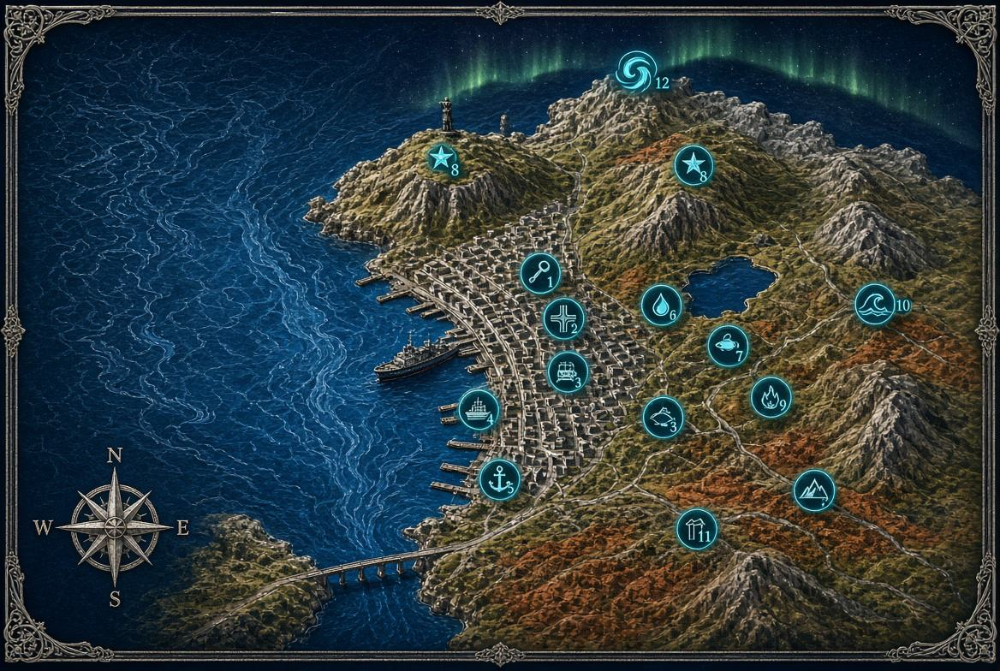
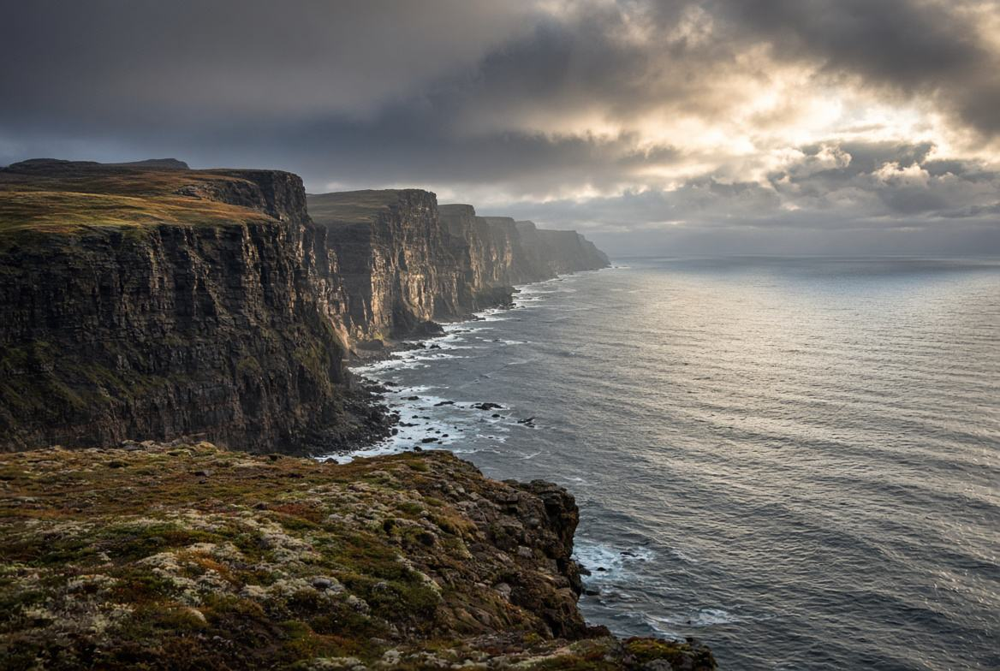
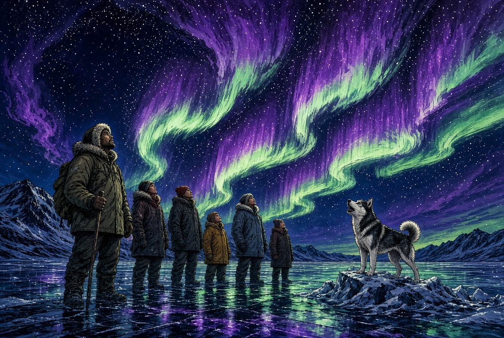
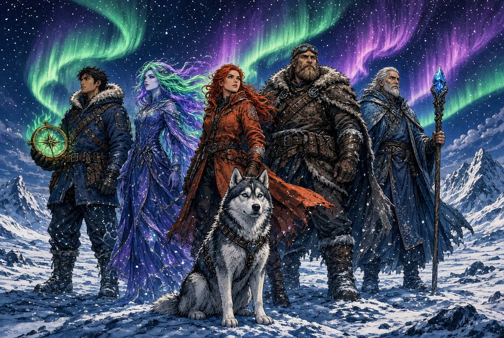

День 1Охота
Вечером уезжаем от фонарей. Плед, термос, гид, машина только на четверых. Если небо закрыто — ночь не списана: переносим на запасной вечер внутри этих же дней.

КолаТур · мини-группа · 4 человека
Конец октября · Териберка · море 2 часа · охота на сияние
4 дня / 3 ночи · жильё ваше · отдельная машина
Ночи уже тёмные, катер ещё ходит. Это короткое окно: в ноябре море закрывается, и остаётся только берег.
Программа
Забор от вашего адреса в Мурманске. Не сборный автобус на сорок человек.
Вечером уезжаем от фонарей. Плед, термос, гид, машина только на четверых. Если небо закрыто — ночь не списана: переносим на запасной вечер внутри этих же дней.
Полный день у края земли: пляж, «Яйца дракона», кладбище кораблей, берег Баренцева моря. Катер около двух часов. Кита в договор не пишем — пишем выход. Шторм не сжигает день: остаётся берег.
Обзорная по Мурманску и атомный ледокол «Ленин»: палуба, рубка, Северный морской путь. Не макет. Если первая ночь была пустой — вечером вторая охота.
Саамская деревня: олени, чум, разговор, не минута у сувениров. День короче — удобно под вечерний рейс. Если сияние ещё не поймали, это третья попытка, без доплаты.

Глава · море
Катер два часа. Жилеты, инструктаж, без шторма ради кадра. Горбач или полосатик бывают. Пустое море тоже бывает — и это нормально. Мы не продаём кита. Продаём выход, пока вода ещё открыта.

Глава · сияние
Мини-группа, без десяти машин на одной сопке. Основная ночь и запасная. Сияние не по расписанию — выезд по расписанию. До утра никого не держим: если тихо, возвращаемся и берём другую ночь.
Стоимость
178 000 ₽
44 500 ₽ с человека · на четверых
Сияние с запасной ночью, Териберка и море, город и «Ленин», саамская деревня. Проживание не входит.
148 000 ₽
37 000 ₽ с человека · на четверых
Без саамского дня. Остаются охота, Териберка с морем, обзорная и ледокол. Тот же принцип: небо и кита не обещаем, выезды — да.
Конец октября — начало ноября. Напишите даты прилёта до оплаты: закрепим гида и катер, пока окно открыто. Яна · WhatsApp +7 (995) 877-19-79

Конец октября